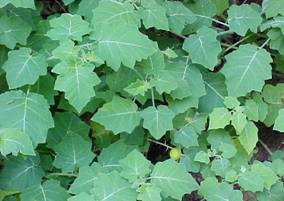
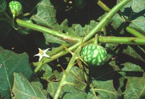
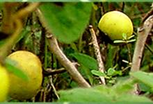
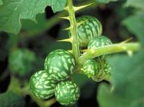

HORT 282 :: Lecture 30 :: MEDICINAL SOLANUM

MEDICINAL SOLANUM
(Solanum khasianum (Clarke), Solanaceae)
Among the various plants which are being used as raw materials for the production of steroidal drugs, steroid-bearing solanum holds an important place due to its quick growth and low initial investment in its commercial cultivation. It yields a glyco-alkaloid, solasodine, a nitrogen analogue of diosgenine. Solasodine through 16-dehydro-pregnenolone (16 DPA) is converted to a group of compounds like testosterone and methyl testosterone and corticosteroids like predinisolone and hydrocortisone. These steroidal compounds have anti-inflammatory, anabolic and antifertility properties, due to which they find large-scale use in health and family planning programmes all over the world.
Distribution
It is widely distributed in the subcontinent, extending from sea-level up to 2 000 m and is reported from Khasi, Jaintia and the Naga Hills of Assam and Manipur. It occurs in Sikkim, West Bengal, Orissa, the Upper Gangetic Plains and in the Nilgiris, ascending to an altitude of 1 600 m. It is reported from North-east, North-west, southern as well as Central India, and extends into Burma and China. Its commercial cultivation is mainly confined to the Akola-Jalgoan tract of Maharashtra in an area of about 3 000 ha.
Description of the Plant
Solanum khasianum synonym(s): Solanum viarum Dunal (2n = 24), belonging to the family Solanaceae, is a stout, branched, woody shrub attaining a height of 0.75 to 1.5 m. The stem has spines, the leaves are ovate to lobed with spines on both the' surfaces, the flowers are hermophrodite, borne on axillary clusters, white; the berries are yellowish when ripe or greenish; the seeds are small, brown in colour and abundant, embedded in a sticky mucilage.

Varieties
Some of the promising, less spiny strains developed in this crop arethe Galxo strain, BARC Strain, Pusa-1, RRL 20-2 and RRL-G, L-6 which is said to be completely spineless. 'Arka Sanjeevini' and 'Arka Mahima' are the two diploid and tetrapoloid varieties of this crop developed at the Indian Institute of Horticultural Research, Hessarghatta, Bangalore and released for cultivation.
Soil
Solanum is a hardy plant and can be cultivated on a wide range of soils under various agro climatic conditions, but it cannot withstand water-logging. Though it can be grown in all types of soils, the best soil for its successful cultivation is red lateritic soil with a moderate quantity of organic matter. The plant does not perform well in very clayey soils. It is sown in lines of 1 to 1.5 cm-deep furrows, 10 cm apart and covered with a thin layer of soil. About 1.25 kg seeds sown in 5 nursery beds of the above size will provide enough seedlings for planting 1 ha of land. Their germination is completed in 7-10 days. Within 4-5 weeks, when the seedlings are 10-12 cm high and develop 6 leaves, they are ready for transplanting into the main field.
Climate
It is found growing under different kinds of climates throughout the length and breadth of the country, but prefers a moderate climate for its successful growth. The growth as well as development of the plants and finally, the yield of fruits depends significantly on the climatic conditions. Depending upon the temperate, dry period length, rainfall and irrigation facilities, the sowing time may vary from June to September or October. The plants sown in late October to February are more susceptible to virus diseases, and sowing in March is not practicable as harvesting and drying will be hindered by the rainy season. Under rainfed conditions, the crop should be sown from mid-June to the first week of July. Under irrigated conditions, the sowing in September results in profuse flowering and berry formation during the winter months.
Manures and Fertilizers
Solanum viarum responds well to the application of manures and fertilizers. Green manuring before planting has been found to increase the yield by 20%. For better yields, an application of 100:60: 40 kg of N, P and K /ha, depending upon the soil condition, is recommended. The entire quantity of phosphorus, potassium and half of the nitrogen are applied at the time of land preparation. While the remaining half of the nitrogen is applied when the plants start flowering. A fertilizer dose of 65: 40: 40 kg of N, P and K has been recommended under Bangalore conditions.
Land Preparation and Planting
In the absence of sufficient moisture in the soil, the field should be immediately irrigated after transplanting. The crop is further irrigated at weekly intervals during the first month and then the interval is increased to once in fortnight, and later as and when required. Well before the time of transplanting, the field is thoroughly prepared about 25 t/ha FYM is incorporated into the soil, it is divided into blocks of convenient sizes, and ridges are opened at a distance of 60 cm.
At the time of transplanting, the seedlings uprooted from the beds are thoroughly cleaned of soil and dipped in 0.1 % Bavistin solution for at least 5 minutes to overcome the wilt problem and, thereafter, transplanted at a distance of 45 cm within the row. Spacing of 50 x 50 cm, 75 x 75 cm and 90 x 120 cm are also recommended for this crop for different locations.
Interculture
After 2-3 weeks of transplanting the first weeding is done, and later when the crop is 2-3 months old. Afterwards, the crop puts on enough canopy to smother the surface and, hence, no growth of weeds takes place.
Pests and Diseases
Insect Pests
The plant is sufficiently hardy and, therefore, free from any of the serious pests. However, it is sometimes attacked by leaf-eating caterpillars and wingless hoppers. In case of severe attack, the crop may be sprayed with Endosulphan (3 ml/l) to control them. The fruit borer (Leucinodes orbonalis) and root-eating grubs are the other pests reported. Ekalux (2 ml/l) can be sprayed to control the fruit borer. Chloropyriphos may used to control grubs.
Diseases
1. Powdery mildew will be noticed during prolonged dry and warm period, Bavistin (I g/l) may be sprayed to control this disease.
2. Collar rot or Fusarium wilt can be overcome by keeping the field clean and planting the crop in a well drained soil. Dipping the roots of the seedlings in a 0.1 % solution of Bavistin for 1 hour and drenching the seed-beds with 0.25% of copper oxychloride or 0.1 % of Bavistin solution can control the disease.
3. Sometimes the plants are attacked by mosaic, caused by three different viruses, which leads to stunted growth and chloratic leaves. Such plants are better removed and destroyed.
4. Bacterial blight is not a serious disease on this crop. However, under severe incidence, a treatment with the solution of 30 g of Streptocyclin and 30 g of Copper sulphate dissolved in 500 I of water per hectare controls this disease.
5. Leaf-blight is caused by Pythium butleri and is not a serious problem in this crop.
Seedlings may also be attacked by damping-off disease while growing in the nursery-beds. To control this, the seeds are treated with Bavistin @ 3g /kg of seeds. Drenching the seed-beds 2-3 days after sowing and again when 50% of the seeds have germinated, with 0.1% of Bavistin or 0.25% of copper oxychloride solution, helps to check the further spread of the disease.
6. The occurrence of the chlorotic stunt disease and its association with the root-knot nematode (Meloidogyne javanica), and the wilting of plants due to M. incognita have also been reported.
Harvesting and Processing of the Berries
Generally, the accumulation of glyco-alkaloid increases with the physiological age of the fruit and attains its peak value in the fruits of 50-60 days. This state of fruit growth coincides with the change in fruit colour from green to just yellow with streaks of green still present, after which the glyco-alkaloid content falls gradually with the maturity of fruits. The alkaloid is distributed throughout the fruit. It is, however, established that about 60% of this is present in, the seeds and the remaining 40% in the pericarp.

The crop takes about 6 months to be ready for harvesting. Harvesting is one of the labour-intensive operations in the cultivation of S. viarum. The spiny nature of the plant hampers plucking the berries at the right stage of maturity, which is very important. During the first part of the harvesting season, when the fruit is big, on an average, one person with gloves can pluck about 50 kg of berries, while working 8 hours a day. However, some good workers in the peak season when most of the berries are ready for harvest can pick even 80 kg of berries per day. The figure is reduced to 40 kg towards the closing season when the fruits become smaller in size. The picking operation spreads over 3 months, because the fruits mature at different times. The processing of berries for marketing requires a lot of care. Fresh fruits contain about 80% moisture. The pharmaceutical firms need berries containing about 10% moisture. Hence, the berries must be dried in the sun.
Yield
When the crop is grown by adopting proper cultivation practices, it may yield nearly 10,000 kg/ha of fresh berries which, in turn, will give about 2 500 kg/ha of dried berries.
**************
- Scientific name of medicinal solanum is _________
- Steroidal raw material obtained from ____________
- Salosoidin used in the manufacture of ___________
- Origin of medicinal solanum ______
- Variety of medicinal solanum _____________
| Download this lecture as PDF here |